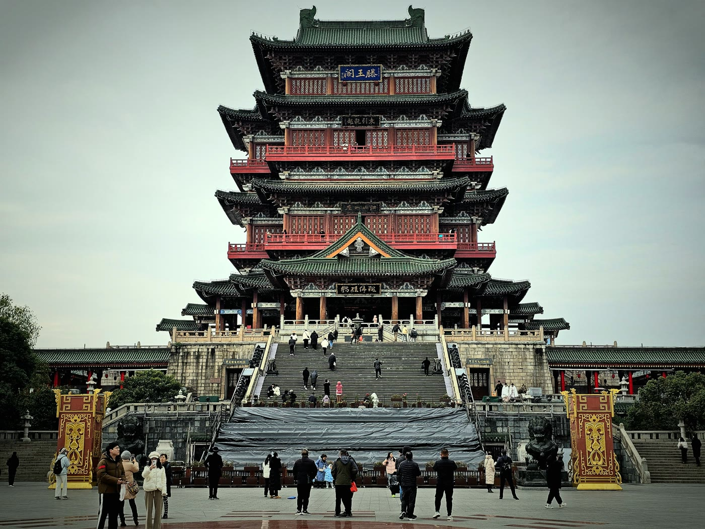
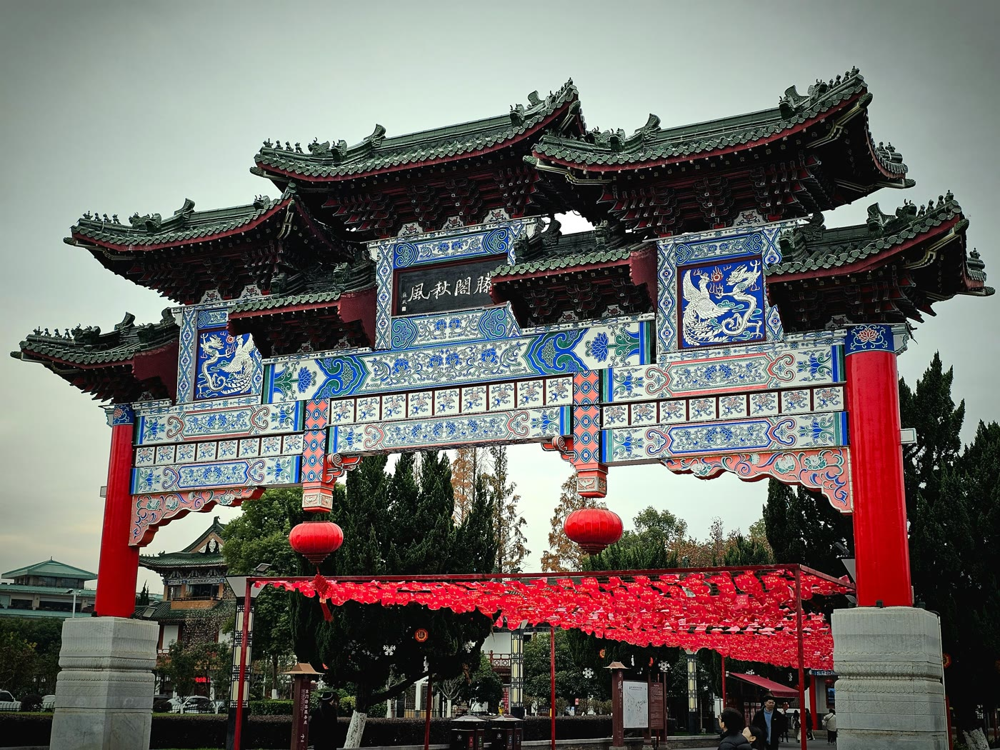

江西省の省都・南昌は、唐代の詩人・王勃が名文「滕王閣序」に残した「秋水共に長天一色」の一節が、そのまま赣江(かんこう)対岸の巨大音楽噴水広場の名前になっているという、文学と現代の景観がつながる珍しい街です。人口は都市圏で600万人超。この記事では、滕王閣とその名句、対岸の秋水広場、そして日本との縁までまとめて解説します。
「南方昌盛」に込められた願い:南昌の由来
南昌の歴史は、前漢の高祖6年(前201年)、楚漢戦争で項羽を追撃した将軍・灌嬰(かんえい)がこの地に城を築いたことに始まるとされています。当時「灌嬰城」と呼ばれたこの城が南昌建城の起点です。「南昌」という地名自体は前漢の時代にはすでに使われていたとされ、赣江の南に位置することから「南方昌盛(南方が繁栄するように)」との願いが込められた、あるいは「昌大南疆(南方の領域を盛んにする)」の意とする説が伝わっています。ちなみに江西省全体の別称「豫章」も、南昌に置かれた郡の名に由来します。
市内の見どころ
- 滕王閣:中国江南三大名楼の一つ。唐の永徽4年(653年)、高祖李淵の子・李元嬰が洪州都督として在任中に創建したのが始まりで、以来1,300年余りの間に29回もの焼失と再建を繰り返してきました。現在の建物は、建築史家・梁思成らが1942年に作成した復元図をもとに1985年から再建が始まり、1989年10月8日に完成した29代目です。唐の詩人・王勃が675年、宴席で即興で書き上げたとされる「滕王閣序」(773字、37の典故と40の四字成語を含む名文)は、中国の学校教育でも広く知られています
- 秋水広場:その名は、王勃が「滕王閣序」に残した名句「落霞与孤鶩斉飛、秋水共長天一色(夕焼けと一羽の鴨が共に飛び、秋の水面は遥かな空と同じ色に溶け合う)」の一節「秋水」にちなみます。約1,300年前の一節がそのまま今の広場の名前になっているわけです。滕王閣とは赣江を挟んで対岸、紅谷灘新区にあり、2003年7月着工、2004年1月開業。三日月形の広場で川岸線1,100m、噴水池だけで約12,000㎡という規模を持ち、中心の主噴水は高さ128mに達します。稼働当時「アジア最大級の音楽噴水群」と呼ばれ、夜には滕王閣を背景にした噴水ショーが人気です
- 八一南昌起義紀念館:1927年8月1日、南昌市内に駐屯していた国民党軍に対して周恩来・賀龍・葉挺・朱徳らが率いる部隊が武装蜂起した「南昌起義」の舞台です。この日は後に中国人民解放軍の「建軍記念日」と定められ、南昌は「英雄城」の別名で呼ばれるようになりました。現地には当時の指揮部が置かれた建物を利用した記念館があります
- 繩金塔:唐の天祐年間(904〜907年)創建と伝わる、1,100年余りの歴史を持つ古塔です。清の康熙48年に一度倒壊し、同52年(1713年)に再建されました。周辺は近年、歴史文化街区として整備されています


周辺への拡張:中国最大の淡水湖・鄱陽湖
南昌市の郊外には、中国最大の淡水湖である鄱陽湖が広がっています。南北173km・湖岸線約1,200kmという広大な湖で、南昌市新建区・南昌県などが湖岸の一部を占めています。ここは「アジア最大級の渡り鳥の楽園」としても知られ、毎年60万〜80万羽もの渡り鳥が越冬のために飛来し、世界のシロヅル(白鶴)の約9割、ナベコウ(東方白鸛)の8割以上が集まるとされています。観鳥のベストシーズンは11月〜翌年3月です。
友好都市は高松市:1990年締結、30年以上の交流
南昌市は1990年、香川県高松市と友好都市協定を締結しました。両市の交流拠点として「南昌・高松中日友好会館」も設けられており、2020年には提携30周年を迎えています。
グルメ:南昌拌粉と瓦罐湯
南昌の朝食に欠かせない組み合わせが、南昌拌粉(バンフェン)と瓦罐湯(ワーグワンタン)です。拌粉は、ゆでた米粉の水気を切り、醤油や薬味だれで和えた冷たい和え麺で、手頃な価格と食べやすさから南昌グルメの代表格として親しまれています。これに組み合わせるのが、素焼きの壺(瓦罐)に具材とスープを入れ、8時間かけてじっくり煨(に)込む瓦罐湯です。卵入り肉団子スープ、イカと肉団子のスープ、しいたけと肉団子のスープ、ピーナツと排骨(スペアリブ)のスープなど種類が豊富で、この2つを一緒に注文するのが南昌の定番の朝食スタイルとされています。
気候とベストシーズン
南昌は亜熱帯モンスーン気候に属し、夏は「中国三大かまど」の一つに数えられるほど蒸し暑くなることもあります。観光に適しているのは、気候が安定する春(3〜5月)と秋(9〜11月)です。鄱陽湖での観鳥を目的とする場合は、渡り鳥が飛来する11月〜翌年3月がベストシーズンになります。
東京からの行き方
本稿執筆時点(2026年9月)で、成田・羽田・関西空港から南昌昌北国際空港への直行便は確認できていません。上海(浦東・虹橋)や広州などを経由する乗り継ぎ便での移動が現実的なルートです。南昌東駅・南昌西駅は高速鉄道の要衝でもあり、上海・広州・武漢方面から高鉄で向かうルートもあわせて検討できます。運航状況・時刻表は変更されることがあるため、渡航前に最新情報をご確認ください。
まとめ
南昌は、王勃の名文「滕王閣序」の一節がそのまま対岸の広場の名前になっているという、1,300年前の文学と現代の景観がつながる珍しい街です。赣江を挟んで向き合う滕王閣と秋水広場の対比、近代史の舞台となった八一南昌起義紀念館、そして鄱陽湖の壮大な自然まで、幅広い魅力を持つ街だといえるでしょう。
この記事の内容に古い情報や誤りを見つけた場合、あるいはご感想・ご質問がありましたら、お問い合わせまでお気軽にご連絡ください。